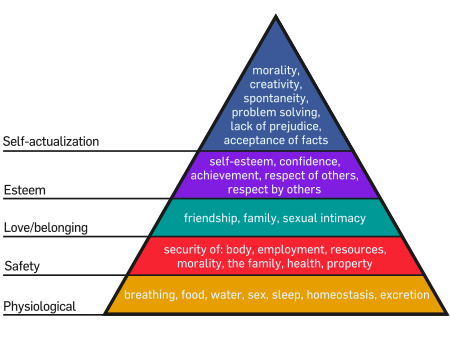
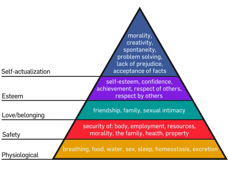

= Laborator 9 - Conducere, motivare, inteligență emoțională =
Ce inseamna "conducere"?
Actul conducerii (“leadership” sau “management”) poate fi definit cel mai bine prin scopul său. Două definiții edificatoare:
* “Leadershipul înseamnă crearea unui context prin care un grup de oameni pot contribui la înfăptuirea de lucruri extraordinare.” - Alan Keith
* “Leadershipul este capacitatea de a agrega resursele disponibile cu mediul intern și extern în scopul de a atinge obiectivele organizației - sau ale societății.” - Ken Ogbonnia
Contrar părerii generale, actul conducerii NU înseamnă putere, cât mai ales RĂSPUNDERE. Primul lucru pe care trebuie să îl înțeleagă un lider este ca el poartă răspunderea întregii organizații subordonate, respectiv că eșecul unui membru al organizației este deopotrivă un eșec al conducerii organizației. Demonstrație: întrucât leadershipul presupune crearea contextului în care poate fi atins un obiectiv, rezultă că succesul sau eșecul în atingerea obiectivului nu pot fi niciodată desprinse de actul conducerii.
În același timp, responsabilitatea NU trebuie confundată cu implicarea directă, respectiv cu imixtiunea nemijlocită! Actul conducerii nu presupune schimbarea unui bec sau spălarea cu mopul, ci definirea organizației, a proceselor și a resurselor astfel încât schimbarea unui bec sau spălarea cu mopul să se întâmple în mod firesc. 
Al doilea punct esențial este complementar primului: anume, actul conducerii trebuie să fie ADAPTIV. Nu există rețete universale sau șabloane, ci doar principii și direcții. Actul conducerii înseamnă construcție inteligentă și nu aplicare.
Fundamentele actului de conducere
La baza actului de conducere trebuie să stea în permanență scopul final, respectiv crearea acelui context “câștigător”. Crearea și menținerea unui asemenea context se desfășoară simultan pe mai multe planuri. Ele nu trebuie înțelese în sens strict, ci interdependente, cu ponderi flexibile și aplicate în mod adaptiv:
* Planificare: definirea obiectivelor și calendarului, ce trebuie să se întâmple și când * Organizare: definirea organizației, repartizarea și gestiunea resurselor disponibile * Coordonare/Directionare: direcționarea organizației către atingerea obiectivelor * Control: monitorizarea proiectului în concordanță cu planurile * Motivare: mobilizarea membrilor echipei către atingerea obiectivelor
{kind=link}
* Sursa: http://www.cognitive-technologies.com/
Se spune că un leadership (sau management) bun este invizibil deoarece creează iluzia că lucrurile merg spontan, firesc, “de la sine”. Consecințele unui leadership de calitate:
* succese ale organizației * personal motivat * procese eficiente * mediu de lucru plăcut * obiective clare pentru fiecare și în armonie cu ale celorlalți membri
Semnele unui leadership slab:
* nesiguranța sau amânarea deciziilor dincolo de o limită rezonabilă * nemulțumiri și/sau frustrări în rândul personalului * efort și stres percepute ca prea mari în raport cu realizările * lipsa de eficiență a grupului în ansamblu * divergența de obiective între persoane/echipe/departamente diferite * eșec repetat în atingerea obiectivelor
"Management" vs "Leadership"
Ambii termeni desemnează actul de conducere, însă termenul “leadership” s-a desprins odată cu lucrarea lui J. M. Burns (“Leadership”, 1978) ca un stil de conducere axat pe interacțiunea umană (comunicare-direcționare-motivare) și mai puțin pe “tranzacții” impersonale (control-stimulare-penalizare). Folosind o metaforă, managementul este “știința” care creează organizații funcționale și eficiente, iar leadershipul este un adaos de interacțiune umană care poate aduce în plus entuziasm. 
Obiectivul acestui laborator va fi leadershipul.
Leadership: cum?
Leadershipul înseamnă direcționare și motivare. Nu vom discuta aici partea “tehnică” de planificare, construcție și control ale unei organizații, ci doar funcționarea ei optimă în condițiile unei structuri fixe.
Gândiți membrii unei organizații ca număr de vectori (forțe) cu origini fixe (posturile în cadrul organizației) însă cu direcții și module variabile în timp (oamenii). Pentru ca rezultanta să fie maximă în aceste condiții, este nevoie de două lucruri: * vectorii să aibă direcții și sensuri cât mai apropiate * variația vectorilor să fie coerentă (respectiv maximele să se suprapună cât mai mult iar minimele cât mai puțin)
Direcția și sensul înseamnă că membrii organizației împart un set comun de obiective. Variația vectorilor reprezintă evoluția în timp a motivării, a direcției, a efortului depus. În aceste condiții, leadershipul presupune următorul checklist:
# definirea unor obiective “SMART” ale grupului:
#* Specific – obiectivele trebuie să fie clare
#* Measurable – trebuie să existe o metrică de măsurare a gradului de atingere a obiectivelor
#* Achievable – sunt obiectivele tangibile în mod absolut?
#* Realistic – sunt obiectivele tangibile cu resursele disponibile?
#* Time – în ce interval de timp trebuie atinse?
# comunicarea acestor obiective membrilor grupului
#* definirea unui context comun (sistem valoric, terminologie, etc) împărtășit de toți membrii grupului
#* transmiterea informației adecvate și într-un mod neechivoc
# translatarea obiectivelor organizației în obiective individuale ale membrilor grupului
#* înțelegerea aptitudinilor și slăbiciunilor membrilor grupului în mod individual
#* identificarea rolurilor potrivite/nepotrivite pentru fiecare
#* derivarea unor obiective individuale (de asemenea SMART) in concordanta cu obiectivele organizatiei
#* definirea unor metrici pentru gradul de atingere a acestor obiective
# translatarea obiectivelor individuale în beneficii individuale
#* cunoașterea membrilor grupului, înțelegerea nevoilor/dorințelor/problemelor fiecăruia
#* definirea beneficiului adecvat fiecăruia, respectiv a resortului care îl determină să acționeze pentru îndeplinirea obiectivelor sale individuale
#* definirea regulii de corelare a atingerii obiectivului cu obținerea beneficiului individual
# monitorizare
#* detectarea și măsurarea abaterilor de la obiectivul global
#* translatarea acestora în abateri de la obiectivele individuale
#* înțelegerea cauzelor care au condus la acestea
#* corectarea cauzelor:
# medierea conflictelor
# clarificarea neînțelegerilor
# dacă este cazul, redefinirea obiectivelor și beneficiilor individuale
În mod simplist, obiectivul organizației poate fi “livrarea proiectului, fără buguri, la termen”, un obiectiv individual poate fi “layerul de acces la baza de date până la milestone-ul X” iar beneficiul individual poate fi “nota 10” sau “salariul Y”. Această abordare asimilează însă (naiv) oamenii cu automate deterministe, neglijând faptul că indivizii sunt de fapt animați de resorturi interioare mult mai profunde, complexe și adeseori iraționale.
== Motivare ==
Motivația este un sinonim pentru energia mentală pe care este dispus un individ să o investească în atingerea unui scop. Motivarea înseamnă “energizarea” unui individ în vederea unui obiectiv (observați faptul ca definiția subînțelege un factor extern individului).
Orice acțiune din partea unui individ presupune o anumită energie mentală:
ex. deplasarea către un anumit loc.
Uneori, această energie apare în mod spontan, intrinsec:
ex. atunci când locul este camera prietenului/prietenei.  Alteori, energia nu este disponibilă în mod spontan, ci doar extrinsec, respectiv are nevoie de un aport extern:
ex. atunci când trebuie să vă deplasați exact aceeași distanță, cu același efort, dar pentru a veni la facultate.
Într-un mediu profesional:
* indivizii motivați caută întotdeauna metode tot mai bune de a-și îndeplini obiectivele
* indivizii motivați sunt mai orientați către calitate
* indivizii motivați sunt mai productivi
Conform cu teoria clasică a lui Maslow (A Theory of Human Motivation), energia investită de un individ este alocată conform unei piramide de nevoi ale individului. La baza acestei piramide stau nevoile primare, fiziologice: hrana, respirația, etc. Pe nivelele superioare stau securitatea, apoi relaționarea cu apropiații (familia, etc), s.a.m.d. Individul nu va investi energie pentru un nivel superior al piramidei dacă nevoile de pe nivelele inferioare nu sunt satisfăcute. Lipsa de împlinire a nevoilor de pe nivelul inferior dă manifestări fiziologice. Lipsa de împlinire a nevoilor de pe celelalte nivele dă manifestari psihologice: nervozitate, oboseală psihică, anxietate, etc. Însă, odată nevoile de pe un nivel satisfăcute, individul își va concentra în mod constant energia pe nivelul superior, fără a mai “reinvesti” în nivelele inferioare altfel decât în mod temporar, atunci când este nevoit.

Motivarea poate fi gandită ca un joc de echilibristică între amenințarea cu neîmplinirea și promisiunea împlinirii acestor nevoi.
Din start, motivarea prin amenințarea cu neîmplinirea este limitată în timp: individul se adaptează (caz în care ea nu mai are efect) sau renunță (efect contrar celui dorit). În plus, ea crește gradul de stres, ceea ce e contraproductiv. Din contra, motivarea prin promisiunea împlinirii este eficientă, are grad mai mic de stres și aplicabilitate de durată.
=== Banii ===
Banii impactează nivelele inferioare ale piramidei lui Maslow, deci sunt un factor puternic de motivare - însă nu unul de durată. Nivelele superioare (respectul de sine și atingerea potențialului maxim) dau o motivație mai puternică și pe termen mai lung.
=== Respectul de sine ===
Nivelul respectului de sine reunește generic nevoile de posesie în două subniveluri:
* subnivelul inferior:
statut
recunoaștere/faimă/prestigiu
atenție
* subnivelul superior:
putere
competență
încredere în sine
independență
libertate
Exercițiu (colectiv): enumerați elemente care pot crește motivarea individului la nivelurile de mai sus.
Multe elemente simple pot crește motivarea individului la aceste niveluri:
* nomenclatura postului
Alteori, energia nu este disponibilă în mod spontan, ci doar extrinsec, respectiv are nevoie de un aport extern:
ex. atunci când trebuie să vă deplasați exact aceeași distanță, cu același efort, dar pentru a veni la facultate.
Într-un mediu profesional:
* indivizii motivați caută întotdeauna metode tot mai bune de a-și îndeplini obiectivele
* indivizii motivați sunt mai orientați către calitate
* indivizii motivați sunt mai productivi
Conform cu teoria clasică a lui Maslow (A Theory of Human Motivation), energia investită de un individ este alocată conform unei piramide de nevoi ale individului. La baza acestei piramide stau nevoile primare, fiziologice: hrana, respirația, etc. Pe nivelele superioare stau securitatea, apoi relaționarea cu apropiații (familia, etc), s.a.m.d. Individul nu va investi energie pentru un nivel superior al piramidei dacă nevoile de pe nivelele inferioare nu sunt satisfăcute. Lipsa de împlinire a nevoilor de pe nivelul inferior dă manifestări fiziologice. Lipsa de împlinire a nevoilor de pe celelalte nivele dă manifestari psihologice: nervozitate, oboseală psihică, anxietate, etc. Însă, odată nevoile de pe un nivel satisfăcute, individul își va concentra în mod constant energia pe nivelul superior, fără a mai “reinvesti” în nivelele inferioare altfel decât în mod temporar, atunci când este nevoit.

Motivarea poate fi gandită ca un joc de echilibristică între amenințarea cu neîmplinirea și promisiunea împlinirii acestor nevoi.
Din start, motivarea prin amenințarea cu neîmplinirea este limitată în timp: individul se adaptează (caz în care ea nu mai are efect) sau renunță (efect contrar celui dorit). În plus, ea crește gradul de stres, ceea ce e contraproductiv. Din contra, motivarea prin promisiunea împlinirii este eficientă, are grad mai mic de stres și aplicabilitate de durată.
=== Banii ===
Banii impactează nivelele inferioare ale piramidei lui Maslow, deci sunt un factor puternic de motivare - însă nu unul de durată. Nivelele superioare (respectul de sine și atingerea potențialului maxim) dau o motivație mai puternică și pe termen mai lung.
=== Respectul de sine ===
Nivelul respectului de sine reunește generic nevoile de posesie în două subniveluri:
* subnivelul inferior:
statut
recunoaștere/faimă/prestigiu
atenție
* subnivelul superior:
putere
competență
încredere în sine
independență
libertate
Exercițiu (colectiv): enumerați elemente care pot crește motivarea individului la nivelurile de mai sus.
Multe elemente simple pot crește motivarea individului la aceste niveluri:
* nomenclatura postului  administration associate sau administrator adjunct?
documentation specialist sau inginer documentare?
security expert sau inginer însărcinat cu securitatea?
* poziția de conducere (“a fi șef”)
* recunoașterea publică a meritelor sale în cadrul organizației
* recunoașterea importanței și/sau dificultății sarcinilor care îi sunt atribuite
* libertatea de a lua decizii în cadrul atribuțiilor sale
* delegarea unor responsabilități importante
* arătarea respectului și atenției față de el
deschiderea de a asculta problemele sale
posibilitatea de a discuta direct, de la egal la egal, cu managementul de pe nivele superioare
tonul amabil al comunicației
sarcinile exprimate în mod prietenos și nu imperativ
administration associate sau administrator adjunct?
documentation specialist sau inginer documentare?
security expert sau inginer însărcinat cu securitatea?
* poziția de conducere (“a fi șef”)
* recunoașterea publică a meritelor sale în cadrul organizației
* recunoașterea importanței și/sau dificultății sarcinilor care îi sunt atribuite
* libertatea de a lua decizii în cadrul atribuțiilor sale
* delegarea unor responsabilități importante
* arătarea respectului și atenției față de el
deschiderea de a asculta problemele sale
posibilitatea de a discuta direct, de la egal la egal, cu managementul de pe nivele superioare
tonul amabil al comunicației
sarcinile exprimate în mod prietenos și nu imperativ
{kind=link}
Alte elemente motivaționale de pe acest nivel pot apela la psihologia inversa. Anume, deși individul are o performanță bună, poate primi un feedback ușor negativ care îi poate afecta imaginea de sine – ceea ce îl va împinge să încerce să compenseze acest lucru prin eforturi suplimentare de a se afirma prin ceea ce face. Astfel, individului i se poate spune că:
* nu face destule eforturi * nu e destul de creativ * colegii nu au atâtea nevoi și plangeri ca el * etc…
O altă teorie despre motivare este așa-numita “teorie a așteptărilor” (Vroom, 1964). Conform acesteia, indivizii sunt motivați atunci când sunt convinși că:
* efortul suplimentar va duce la o performanță mai bună * o performanță mai bună va duce la beneficii atribuite din partea organzației * beneficiile respective sunt previzibile și valoroase pentru angajat
Stiluri de conducere
Am vorbit mai devreme despre checklistul unui leader, dar nu și despre felul în care el “implementează” acest checklist. Din acest punct de vedere, există câteva stiluri de conducere rezumate în imaginea următoare:
{kind=link}
După cum se vede, diferențele constau în gradul de delegare a responsabilităților și de participare al subalternilor la decizii. Este important de reamintit că în leadership nu există rețete, ci construcție. Un leader experimentat din punct de vedere tehnic care lucrează cu o echipă neexperimentată poate avea rezultate bune pe termen scurt și mediu printr-un management autoritativ sau paternalist, dar acest lucru poate frâna dezvoltarea membrilor echipei, ceea ce dăunează pe termen lung. Invers, un leader care lucrează cu o echipă experimentată are probabil cel mai mult succes printr-o delegare a responsabilităților și deciziilor, însă aici apare pericolul ca echipa să diveargă de la obiectivele organizației către obiectivele proprii.
Inteligența emoțională
Inteligența emoțională este un concept vehiculat din ce în ce mai mult în ultimii ani, atât în ceea ce privește actul de conducere cât și în ceea ce privește dezvoltarea personală.
Inteligența emoțională se definește drept “capacitatea de a conștientiza, evalua și gestiona emoțiile proprii sau ale altora”. Este ușor de văzut de ce este importantă pentru un leader: capacitatea sa de a relaționa cu membrii organizației la un nivel emoțional îi va atrage sprijinul și atașamentul grupului și va echilibra în același timp grupul.
Cei mai buni lideri sunt aceia care nu doar conduc, ci și “inspiră” grupul. Jerald Greenberg (“Organizational Behavior: The State of the Sciences”, 1994) identifică mecanismele acestei “inspirații”:
* viziune coerentă și în concordanță cu valorile de bază ale grupului * pasiune și credință fermă în această viziune * încredere în sine, hotărâre, consecvență * imagine personală construită în mod conștient * modelare – grupul se va identifica cu valorile pozitive ale liderului, lăsându-se astfel modelat de acesta * reprezentare externă – liderul își asumă rolul de a reprezenta grupul în fața unui mediu extern * responsabilitate și încredere acordate membrilor grupului – liderul comunică așteptările sale, ca și încrederea că grupul le va putea împlini * comunicare inspirațională – comunicarea liderului nu este seacă, ci însuflețită, colorată, puternică
Psihologia grupului
Poate părea surprinzător, dar grupurile se comportă foarte diferit față de indivizii care le compun - sau, cu alte cuvinte, indivizii se comportă diferit în grup versus singuri. Vom menționa pe scurt câteva caracteristici:
# “Facilitarea socială”: Individul singur este mai relaxat și mai indiferent la mediu. În prezența grupului, nivelul său de atenție (alertă) crește. Ca o consecință, individul va executa mai bine sarcinile ușoare (sau automatismele) dar mai prost sarcinile complexe (“Social Facilitation” - Guerin, 1993). # Polarizare: Un grup ai cărui membri împărtășesc opinii similare tinde să treacă prea ușor peste contraargumente atunci când ia o decizie. Membrii grupului concentrează energia pe sublinierea punctelor cu care sunt de acord și evită concentrarea de energie pe cele asupra cărora există semne de întrebare. Deciziile au de aceea tendința de a fi impulsive, unilaterale și dezechilibrate, neglijând aspectele asupra cărora grupul nu este întru totul de acord și exacerbându-le pe cele cu care este de acord. Simultan, are loc o amplificare reciprocă a energiei, care poate conduce la reacții supradimensionate (este mecanismul prin care manifestațiile pașnice se pot transforma în lupte de stradă, dar și mecanismul prin care membrii unei echipe se motivează/demotivează reciproc). # Diluarea responsabilității și efectul bystander: Cu cât un grup este mai mare, cu atât influența individuală asupra grupului este mai mică. Aceasta conduce la o diluare a responsabilității resimțită de fiecare individ din grup. Efectul bystander (= martor) este un fenomen observat în justiție, respectiv agresiuni petrecute în văzul a zeci de martori care nu au intervenit. Explicația este o combinație a polarizării și a diluției de responsabilitate: pe de o parte, fiecare membru al grupului așteaptă ca ceilalți să intervină (diluția responsabilității) și pe de altă parte când observă că ceilalți nu intervin are tendința să acționeze în concordanță cu comportamentul grupului (polarizare). În cadrul unei echipe, efectul bystander poate însemna că un email prin care soliciți ceva are șanse mai mari de succes dacă este trimis unui individ față de cazul în care este trimis pe o listă.
Cultura organizațională
Ansamblul de valori, termeni de specialitate, reguli, procedee, obiceiuri - formale dar mai ales informale - din cadrul unei organizații poartă numele de cultura organizațională și este contextul comun în care comunică membrii organizației. Noii veniți într-o organizație “învață” de la membrii vechi această cultură organizațională și ajung să și-o însușească.
Lipsa ori fragilitatea unei culturi organizaționale înseamnă că membrii grupului sunt permanent expuși neînțelegerilor reciproce (fiecare presupune altceva) și de aici înșelarea așteptărilor, frustrări și lipsa de randament.
O organizație este atât de bună pe cât este cultura sa organizațională.
Relația cu managementul superior
Dacă ierarhia unei organizații este un arbore, atunci actul conducerii se exercită în toate nodurile acestui arbore, la toate nivelurile. Pentru a completa tabloul actului de conducere, trebuie să vorbim și despre relația unui manager cu superiorii săi.
Tipic, un project manager sau un development manager fac parte din ceea ce se numește middle management. Superiorii către care aceștia raportează și cu care relaționează pot fi atât din middle management, cât și din executive management:
{kind=link}
* CEO - Chief Executing Officer, conduce întreaga organizație și raportează unui board de directori sau investitori * CTO sau CIO - Chief Technical (sau Information) Officer, responsabil de tehnologie și de organizația de engineering
Sunt câteva lucruri fundamentale care trebuie întelese despre superiorul ierarhic, fie el senior sau middle management:
# vede “mai de sus”. Aceasta înseamnă că el are context mai larg și o viziune mai de ansamblu, dar în același timp că nu vede atât de multe detalii ca și tine. Corolar: nu îi vorbi mai tehnic decât îți vorbește el. # este o resursă shared. Capacitatea lui de prelucrare a informației este aceeași cu a ta, însă el are mai multe proiecte similare cu al tău. Ca atare, timpul alocat de el proiectului tău este mai mic decât al tău, iar “cuantele” lui informaționale sunt mai mari decât ale tale. El nu poate - și nu trebuie! - să fie la curent cu toate detaliile. # este un client. Tu trebuie să îl informezi, să îi preiei feedbackul - dar să îi și “vinzi”, respectiv ori de câte ori îi ceri ceva, să îi comunici clar beneficiile din punctul lui de vedere.
Exemple
* Exemplul 1: ai nevoie de niște servere pentru deploymentul proiectului tau, iar bugetul de hardware al firmei este limitat. “cerere”: Poți cere CTO-ului serverele așa: “am nevoie de trei servere noi, îmi trebuie pentru proiectul X”. Va raspunde foarte probabil “nu putem acum”. “vânzare”: Sau, le poți cere așa, “vânzând” beneficiile: “ne apropiem de finalul proiectului X. Asa cum știți, proiectul X ne va dubla profitul și numărul de utilizatori. Pentru un user experience cât mai bun, recomandăm trei servere noi”
* Exemplul 2: ai nevoie de un upgrade al versiunii de PHP, care presupune rescrierea unor părți de cod fără a aduce un profit vizibil. Trebuie să obții acordul CEO-ului. El nu este o persoană tehnică dar este deschis și îți poate acorda cinci minute din timpul lui ca să îl convingi de ce upgrade-ul de PHP este necesar. “așa nu”: “vrem un upgrade al versiunii de PHP de la 4.0.4 la 5.2.12… am putea si la 5.2.12 RC 3 dar încă investigăm dacă merge cu Zend Server 5.0… upgrade-ul e necesar pentru că 5.2.12 fixează bugul de popen care produce un segfault atunci când pasezi întregi octali care nu sunt moduri de acces” “așa da”: “în momentul de față site-ul este vulnerabil și potențial instabil din cauza unui bug de PHP. Versiunea nouă fixează acest bug. Va trebui să rescriem și porțiuni de cod, dar în final site-ul va fi mai sigur și mai stabil pentru useri.”
* Exemplul 3: echipa X este foarte competentă. Rezolvă cele mai dificile probleme tehnice ale proiectelor fără ca development managerul să știe măcar că au aparut probleme. Echipa Y este mai puțin competentă. Atunci când apar probleme, ei încearcă să le rezolve, nu reușesc, își informează superiorul ierarhic despre dificultăți și cer ajutor sau uneori apelează direct la membrii echipei X pentru consultanță. După un timp, echipei X i se crește salariul cu 5% iar echipei Y cu 20%.
Explicația: din punctul de vedere al superiorului ierarhic, activitatea echipei X este plată, ei par să își facă treaba fără să se fi lovit de probleme. Echipa Y a avut însă probleme, a încercat să le rezolve, a informat despre ele, a cerut ajutor, a primit în final ajutor de la membrii echipei X. Concluzia superiorului: echipa X nu e foarte încărcată (de aceea a avut timp și să ajute Y) iar echipa Y a primit cele mai grele proiecte (de aceea au avut atâtea probleme) și s-a străduit exemplar (așa cum se vede și din comunicările făcute).
= Exerciții =
# Urmăriți filmul de aici. Discuții. A fost la curs.
# Alocă timp și răspunde la următoarele întrebări:
#* Cine ești? (Atenție: Cine, nu Ce)
#* Cine vrei să devii? Ce vrei să schimbi?
#* Care sunt valorile tale?
# Parcurge acest site și alege cele mai relevante 3-5 elemente care te motivează.
#* Există elemente care te-ar motiva foarte puțin, deloc, sau negativ?
# Numește 3 lucruri/activități care te-ar ține treaz(ă) din proprie inițiativă (pentru că vrei) sau pe care le-ai face continuu timp de 15-20 de ore. Atenție: activități la care ești participant activ, nu pasiv. Adică trebuie să faci ceva; uitatul la filme sau statul la coafor nu intră aici.
#* De ce te-ar ține treaz(ă)?
# Urmăriți filmul de aici. Discuții.
# Gândește-te la o persoană care este, pentru tine, un model de lider.
#* Numește 3 caracteristici ale acestei persoane care sunt reprezentative pentru ea ca lider.
# Gândește-te că ești parte a unui grup, comunități, entități profesionale ideale**. Care sunt cele 3 caracteristici importante ale persoanelor care fac parte din această comunitate?
= Bibliografie =
* http://books.google.com/books?id=kchznb5VKKoC&printsec=frontcover&source=gbs_v2_summary_r&cad=0#v=onepage&q=&f=false * http://en.wikipedia.org/wiki/Motivation * http://en.wikipedia.org/wiki/Leadership * http://en.wikipedia.org/wiki/Outstanding_leadership_theory * http://www.nwlink.com/~donclark/leader/leadstl.html * http://www.mindtools.com/pages/article/newLDR_84.htm * http://en.wikipedia.org/wiki/Emotional_intelligence * http://allpsych.com/psychology101/groups.html * http://en.wikipedia.org/wiki/Change_management_(people)